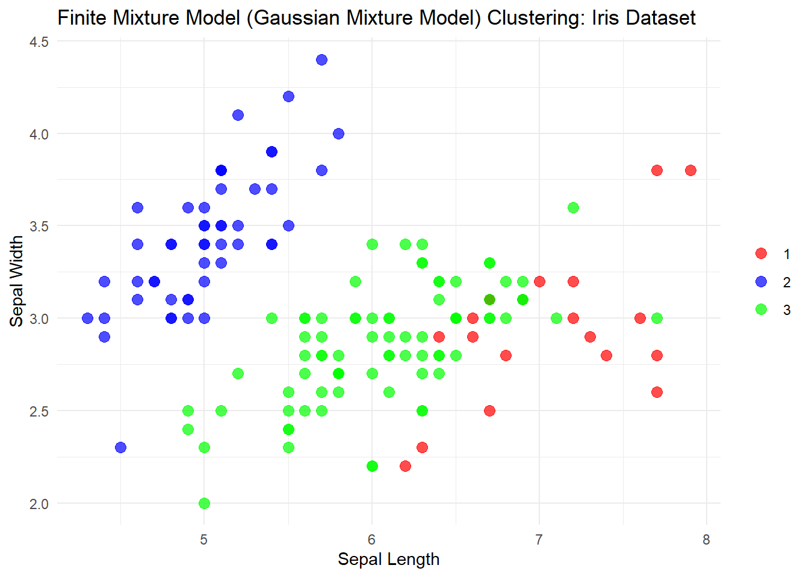

Chapter 6 데이터 마이닝
6.1 데이터 과학에서 데이터마이닝의 역할
데이터 과학에서 분석과정은 전략적 통찰력을 창출하는 데 핵심적인 역할을 함
데이터에 내재된 스토리와 가치를 도출하기 위해 데이터 과학에서는 다양한 분석기법을 사용함
데이터 시각화 기법들은 데이터의 성향 및 변수들의 연관성을 시각적으로 도출한다는 점에서 분석기법의 하나로 정의될 수 있음
평균, 상관계수 등 기초통계량에 기반한 통계기법 및 데이터베이스 조회(query) 기능을 통해서도 유용한 정보를 찾아낼 수 있음
리포팅(reporting), OLAP(On-Line Analytical Processing), 기초통계분석 등은 주로 제한된 용량의 데이터를 한번에 다루는 데 사용됨
기존의 분석 접근법은 빅데이터시대에 사용하기에는 한계가 있음
- 데이터마이닝은 데이터베이스 또는 데이터웨어하우스에 분산 저장된 방대한 양의 데이터로부터 흥미로운 패턴을 발견하고 미래에 대한 예측모형을 구축하는 작업임
6.2 데이터마이닝의 개념
6.2.1 데이터미이닝의 정의
데이터마이닝은 다량의 가공하지 않은 데이터로부터 소량의 귀중하고 유용한 정보 혹은 지식을 추출하는 과정
방대한 데이터를 정제하여 통계 및 수학적 기술 그리고 패턴 인식 기술 등을 사용하여 의미있는 연관성, 패턴 그리고 추세를 발견하는 과정을 총칭함
데이터마이닝과 유사한 용어로서
- 데이터베이스로부터의 지식 마이닝(knowledge mining from database)
- 지식 추출(knowledge extraction)
- 데이터/패턴 분석(data/pattern analysis)
- 데이터 고고학(data archaeology)
- 데이터 준설(data dredging) 등
데이터마이닝은 컴퓨터과학의 인공지능(artificial intelligence), 로봇비전(robot vision), 패턴 인식 등에 활용되는 기계학습(machine learning) 이론에서부터 시작됨
데이터마이닝의 주된 사용목적은 데이터 분석 및 예측모형 적합에 있음
기존의 통계학과 비교하여 방법론적인 측면에서 큰 차이점은 없음
통계학 분야의 선형회귀(linear regression), 로지스틱회귀(logistic regression), 판별분석(discriminant analysis), 주성분분석(principle component analysis), 군집분석(clustering analysis) 등은 데이터를 탐색하고 모형을 설계하는 방법
컴퓨터공학에서는 나무모형(tree based model)이나 신경망모형(neural network)과 같은 예측, 분류를 위한 기계학습 기법들을 발전시켜 옴
기존의 통계학이 특정 변수가 결과에 미치는 영향력을 정량화하는 추론(inference)을 강조하는 반면, 데이터마이닝은 결과에 영향을 주는 변수들의 관계를 모형화하여 이로부터 정확한 예측(prediction)을 하는 데 주목적이 있음
데이터마이닝의 분야별 정리
| 분야 | 정의 |
|---|---|
| 컴퓨터과학 | 패턴 인식 기술뿐만 아니라 통계적/수학적 분석방법을 이용하여 저장된 거대한 자료로부터 우리에게 유익하고 흥미 있는 새로운 관계, 성향, 패턴 등 다양하고 가치 있는 정보를 찾아내는 일련의 과정 |
| 경영정보 시스템(MIS) | 거대한 데이터베이스 혹은 자료에서 유용한 정보를 추출하는 일련의 과정뿐만 아니라 값진 정보를 사용자가 전문적 지식 없이 사용할 수 있는 의사결정 지원 시스템 개발과정을 통칭 |
| 통계학 | 올바른 의사결정을 지원하기 위한 데이터 분석 및 모형 선택 방법론의 개발 |
6.2.2 데이터마이닝의 특징
데이터마이닝은 주로 통계학, 컴퓨터과학, 인공지능공학과 같은 분야에서 개발되는 특징이 있음
실제 활용하는 전문가들은 경영, 경제, 정보기술, 금융공학, 생물정보학 등의 다양한 분야에서 활약하는 데이터 과학자들
데이터마이닝 기법은 데이터 과학의 분석 단계에서 필수불가결한 도구로 활용되고 있음
데이터마이닝의 특징
| 특징 | 비고 |
|---|---|
| 대용량의 관측 가능한 자료 | - 시간의 흐름에 따라 축적됨 - 데이터 분석을 업무에 두지 않는 경우가 많음 |
| 컴퓨터 집약적 기법(computer-intensive method) | - 컴퓨터의 강력한 처리속도와 능력 활용 - 기존 분석기법의 한계 극복 |
| 경험적 방법(adhockery method) | - 경험에 기초하여 기법 개발 - 수리적 특성이 규명되지 않는 기법도 존재 |
| 일반화(generalization) | - 새로운 데이터에 얼마나 잘 적용되는지가 성공적인 데이터마이닝 기법의 판단 기준임 |
| 업무활용성(business applications) | - 다양한 경영 상황하에서 경쟁력 확보를 위한 의사결정을 지원 |
6.2.3 데이터마이닝의 과정
일반적으로 데이터마이닝의 각 단계들은 상호배타적으로 이루어지지 않으며, 한 방향의, 직전석으로 적용되기보다는 상호보완적으로 반복되어 수행됨
데이터마이닝의 수행 단계
- 목적 결정
- 프로젝트의 목적을 계획하고 설정하는 단계
- 많은 경우 계획 단계에서 문제의식이 미리 설정되어 관련 데이터를 수집하게 되지만, 때로는 데이터 수집 후 탐색과정을 거쳐 문제가 설정되기도 함
- 또는 탐색과정에서 얻은 새로운 발견으로부터 기설정된 목적이 재설정되기도 함
- 데이터 수집
- 데이터는 대부분 데이터베이스에서 무작위로 추출하거나 전부 추출하지만, 때로는 분산된 데이터베이스에서 따로 추출하여 통합하기도 함
- 데이터 탐색 및 정제
- 본격적인 데이터마이닝 기법을 적용하기 위해 데이터를 표준화하고 점검(quality control)하는 단계
- 데이터에 결측값(missing value)이 존재하는지, 모든 값은 상식적인 범위 내에 있는지, 이상값은 존재하는지 등의 여부를 조사하여 분석에 적합하도록 처리함
- 탐색과정에서 그래프를 이용한 시각화나 탐색적 자료분석의 기법이 효과적으로 활용됨
- 데이터마이닝 방법 결정
- 데이터마이닝 문제(분류, 예측, 군집화 등)와 데이터마이닝 기법(로지스틱회귀, 신경망, 계층군집 등)을 선택하는 단계
- 일반적인 문제(단계1)를 구체적인 통계 문제로 전환하여 수리적 접근을 함
- 모형 선택
- 데이터마이닝 프로세스의 여러 단계를 반복적으로 수행하여 가장 좋은 모형을 찾는 단계
- 일반적으로 검정데이터(test data)를 이용하여 가장 좋은 성능을 내는 모형의 파라미터를 결정
- 성능평가
- 검증데이터를 이용하여 구죽된 모형의 성능을 평가하여 가장 효율적인 모형을 찾는 단계
- 예측문제의 경우, 다양한 데이터마이닝 기법들 중 예측력이 가장 우수한 것을 선택하여 최종 모형으로 선정
- 적용
- 구축된 모형을 운용 시스템에 탑재하여 실제 의사결정에 적용하는 단계
- 예를 들어, 구축된 모형을 적용하여 구매 가능성이 높은 고객을 결정하고 해당 고객에게 구매 권유 메일을 보내어 수익 창출 가능성을 높임
6.3 데이터마이닝 관련 분야
- 데이터마이닝은 관련된 분야가 다양하고, 데이터마이닝 기법은 범용 방법론을 제공하고 있으므로 활용분야도 매우 다양하고 제한이 없음
6.3.1 고객관계관리
데이터베이스의 정보를 이용한 마케팅 중 하나인 고개관계관리(Customer Relationship Management, CRM)는 소매, 통신판매, 금융서비스, 건강, 보험, 통신, 운송, 제약 등 다양한 분야에서 활발하게 진행되고 있음
고객관계관리의 세부 분야인 목표 마케팅(target marketing), 고객 세분화(segmentation), 고객성향 변동분석(churn analysis), 교차판매(cross selling), 장바구니분석(market basket analysis) 등에 데이터마이닝 기법이 중요한 역할을 함
6.3.2 신용평가
- 신용평가는 특정인의 신용거래 대출한도를 결정하는 것이 주업무로, 목적은 불량채권과 대손을 추정하여 이를 최소화함
- 신용거래 확대를 위한 의사결정 적용분야로 신용카드, 주택할부금용, 소비자대출, 상업대출 등이 있음
- 신용평가의 중요한 사안은 현재의 대출한도액을 유지, 관리하면서 불량채권에 대한 최선의 대응책을 마련
- 신용관리는 은행, 금융서비스, 저당권보험(담보부 보험), 소매(할부 판매) 등 다양한 분야에 적용됨
6.3.3 품질개선
불량품을 찾고, 그 원인을 밝혀서 이를 궁극적으로 예방하는 것
병원과 의료보험조합 등에서는 병원에서 발생하는 사망, 불필요한 장기입원 및 의료비 과다청구에 초점을 맞추고 있으며, 제조업체에서는 제품보증청구를 유발하는 불량품 감소를 통한 이윤증가에 중점을 둠
6.3.4 부정행위 적발
부정행위 적발의 목적은 고도의 사기행위를 발견할 수 있는 패턴을 알아내는 것
은행에서는 신용카드 거래사기 및 불량수표를 적발할 수 있고, 보험회사에서는 보험금의 허위, 과다청구를 예방하며, 통신회사에서는 스미싱 문자 전송을 자동 식별하기 위해 데이터마이닝을 활용함
6.3.7 인터넷기업
- 최근 성공을 거두고 있는 인터넷기업들의 중요한 성공요소로서 적극적인 데이터마이닝 기법의 활용을 들 수 있음
- 예를 들어, 링크드인(LinkedIn)의 ’당신이 알 수도 있는 사람들(People You May Know)’과 같은 서비스는 새로운 수백만 페이지뷰를 창출해 냈고, 이 기능으로 단숨에 더 높은 단계로 도약함
- 아마존(Amazon)은 고객의 과거 구매 기록에 근거해 같은 상품을 구매한 고객들이 주로 구매한 상품을 제시하는 추천 시스템(recommendation system)을 도입하여 높은 매출을 올리고 있음
6.4 데이터마이닝 기법 및 도구
6.4.1 지도학습과 비지도학습
데이터마이닝 기법은 크게 지도학습(supervised learning)과 비지도학습(unsupervised learning)으로 나눌 수 있음
지도학습의 목표는 입출력 간의 관계를 결정하는 시스템에 대한 유용한 근사 시스템을 구하는 것으로 정의할 수 있음
- 입력정보를 담고 있는 변수를 입력변수(input variable) 혹은 설명변수(explanatory variable)라 하고, 출력정보는 출력변수(output variable) 혹은 반응변수(response variable)라고 함
지도학습에서는 학습에 사용되는 실제 출력변수가 존재하여 입출력 변수 간의 관계를 근사시키는 모형 또는 규칙을 학습함
입출력 변수 간의 관계가 모형으로부터 설정되면 데이터로부터 가상(artificial) 출력값을 생성할 수 있고, 이 값이 실제 출력변수값과 유사한 값을 예측하는 모형 및 관계를 구축하는 방식으로 학습이 이루어짐
대부분의 분류(classification) 문제와 예측(prediction) 문제는 지도학습에 속함
비지도학습은 실제 출력변수가 명시적으로 존재하지 않는 학습법
- 출력값이 존재하지 않기 때문에 데이터에 존재하는 여러 가지 형태의 특징을 추출하는 데 목적을 둠
- 생명정보학의 마이크로어레이 데이터 분석에서와 같이 데이터 중에서 유사한 특성을 가지는 그룹의 존재를 찾는 문제
- 장바구니분석에서와 같이 특정한 특성의 존재가 다른 특성의 존재를 설명하는지를 찾는 문제 등
- 사용목적에 따른 데이터마이닝 기법 분류
- 지도학습(supervised learning)
- 분류분석(classification analysis)
- 판별분석(discriminant analysis)
- 로지스틱 회귀분석(logistic regression)
- 최근접이웃기법(K-nearest neighbor)
- 의사결정나무(decision tree)
- 나이브베이즈 분류(naive Bayes)
- 신경망(neural network)
- 지도벡터기계(support vector machines)
- 예측분석(prediction analysis)
- 회귀분석(regression analysis)
- 최근접이웃기법(K-nearest neighbor)
- 신경망(neural network)
- 평활법(smoothing)
- 비지도학습(unsupervised learning)
- 군집분석(clustering analysis)
- K-평균(k-means)
- 계층적 군집분석(hierarchical clustering)
- 유한혼합모형(finite mixture model)
- 이중군집법(Biclustering)
- 연관분석(association anlaysis)
- 장바구니분석(market basket analysis)
- 서열분석(sequence analysis)
- 트랜잭션 데이터 분석(Transaction data analysis)
- 비정형분석
- 텍스트마이닝(text mining)
- 사회연결망분석(Social network analysis)
6.4.2 분류분석
분류분석(classification analysis)은 데이터의 실체가 어떤 그룹에 속하는지 예측하는 데 사용하는 데이터마이닝 기법
- 분류(classification)는 객체를 정해 놓은 범주로 분류하는 데 목적이 있음
- 분류분석은 각 자료의 분류 라벨(label)이 출력변수 역할을 하므로 지도학습으로 분류됨
Discriminant analysis

# Load necessary library
library(MASS)
# Load the iris dataset
data(iris)
# Perform Linear Discriminant Analysis
lda_model <- lda(Species ~ Sepal.Length + Sepal.Width + Petal.Length + Petal.Width, data = iris)
# Display the model results
print(lda_model)## Call:
## lda(Species ~ Sepal.Length + Sepal.Width + Petal.Length + Petal.Width,
## data = iris)
##
## Prior probabilities of groups:
## setosa versicolor virginica
## 0.3333333 0.3333333 0.3333333
##
## Group means:
## Sepal.Length Sepal.Width Petal.Length Petal.Width
## setosa 5.006 3.428 1.462 0.246
## versicolor 5.936 2.770 4.260 1.326
## virginica 6.588 2.974 5.552 2.026
##
## Coefficients of linear discriminants:
## LD1 LD2
## Sepal.Length 0.8293776 -0.02410215
## Sepal.Width 1.5344731 -2.16452123
## Petal.Length -2.2012117 0.93192121
## Petal.Width -2.8104603 -2.83918785
##
## Proportion of trace:
## LD1 LD2
## 0.9912 0.0088# Make predictions using the model
lda_predictions <- predict(lda_model)
# View the predictions
head(lda_predictions$class)## [1] setosa setosa setosa setosa setosa setosa
## Levels: setosa versicolor virginica# Confusion Matrix to evaluate the model's performance
table(Predicted = lda_predictions$class, Actual = iris$Species)## Actual
## Predicted setosa versicolor virginica
## setosa 50 0 0
## versicolor 0 48 1
## virginica 0 2 49# Plot the first and second linear discriminants
plot(lda_predictions$x[, 1], lda_predictions$x[, 2], col = iris$Species,
xlab = "LD1", ylab = "LD2", pch = 19, main = "LDA of Iris Dataset")
legend("topright", legend = levels(iris$Species), col = 1:3, pch = 19)Logistic regression
# Load necessary libraries
library(nnet)
# Load the iris dataset
data(iris)
# Perform multinomial logistic regression
logit_model <- multinom(Species ~ Sepal.Length + Sepal.Width + Petal.Length + Petal.Width, data = iris)## # weights: 18 (10 variable)
## initial value 164.791843
## iter 10 value 16.177348
## iter 20 value 7.111438
## iter 30 value 6.182999
## iter 40 value 5.984028
## iter 50 value 5.961278
## iter 60 value 5.954900
## iter 70 value 5.951851
## iter 80 value 5.950343
## iter 90 value 5.949904
## iter 100 value 5.949867
## final value 5.949867
## stopped after 100 iterations## Call:
## multinom(formula = Species ~ Sepal.Length + Sepal.Width + Petal.Length +
## Petal.Width, data = iris)
##
## Coefficients:
## (Intercept) Sepal.Length Sepal.Width Petal.Length Petal.Width
## versicolor 18.69037 -5.458424 -8.707401 14.24477 -3.097684
## virginica -23.83628 -7.923634 -15.370769 23.65978 15.135301
##
## Std. Errors:
## (Intercept) Sepal.Length Sepal.Width Petal.Length Petal.Width
## versicolor 34.97116 89.89215 157.0415 60.19170 45.48852
## virginica 35.76649 89.91153 157.1196 60.46753 45.93406
##
## Residual Deviance: 11.89973
## AIC: 31.89973# Make predictions using the model
logit_predictions <- predict(logit_model, type = "class")
# Confusion Matrix to evaluate the model's performance
table(Predicted = logit_predictions, Actual = iris$Species)## Actual
## Predicted setosa versicolor virginica
## setosa 50 0 0
## versicolor 0 49 1
## virginica 0 1 49# Visualize the predicted probabilities for the first few observations
head(predict(logit_model, type = "prob"))## setosa versicolor virginica
## 1 1.0000000 1.526406e-09 2.716417e-36
## 2 0.9999996 3.536476e-07 2.883729e-32
## 3 1.0000000 4.443506e-08 6.103424e-34
## 4 0.9999968 3.163905e-06 7.117010e-31
## 5 1.0000000 1.102983e-09 1.289946e-36
## 6 1.0000000 3.521573e-10 1.344907e-35# Get predicted probabilities for each class
predicted_probs <- predict(logit_model, type = "prob")
# Add the predicted probabilities as columns to the iris dataset
iris_with_probs <- cbind(iris, predicted_probs)
# Melt the dataset for easier plotting
library(ggplot2)
library(reshape2)
iris_melted <- melt(iris_with_probs, id.vars = c("Sepal.Length", "Sepal.Width", "Petal.Length", "Petal.Width", "Species"),
variable.name = "Predicted_Species", value.name = "Probability")
# Plot the predicted probabilities using ggplot2
ggplot(iris_melted, aes(x = Sepal.Length, y = Sepal.Width, color = Predicted_Species, size = Probability)) +
geom_point(alpha = 0.7) +
scale_size_continuous(range = c(2, 8)) +
labs(title = "Predicted Probabilities of Iris Species",
x = "Sepal Length", y = "Sepal Width") +
theme_minimal() +
theme(legend.title = element_blank())K-nearest neighbor
# Load necessary libraries
library(class)
library(caret)
# Load the iris dataset
data(iris)
# Set the number of neighbors (k)
k <- 3
# Prepare the data: We use the first four columns (features) for KNN
train_data <- iris[, -5] # Exclude the 'Species' column (target)
train_labels <- iris$Species # 'Species' is the target variable
# Split the data into training and testing sets (70% train, 30% test)
set.seed(123) # Set seed for reproducibility
train_index <- createDataPartition(train_labels, p = 0.7, list = FALSE)
train_data <- train_data[train_index, ]
train_labels <- train_labels[train_index]
test_data <- train_data[-train_index, ]
test_labels <- train_labels[-train_index]
# Perform KNN classification
knn_predictions <- knn(train = train_data, test = test_data, cl = train_labels, k = k)
# Confusion Matrix to evaluate the model's performance
confusion_matrix <- confusionMatrix(knn_predictions, test_labels)
print(confusion_matrix)## Confusion Matrix and Statistics
##
## Reference
## Prediction setosa versicolor virginica
## setosa 10 0 0
## versicolor 0 9 0
## virginica 0 0 12
##
## Overall Statistics
##
## Accuracy : 1
## 95% CI : (0.8878, 1)
## No Information Rate : 0.3871
## P-Value [Acc > NIR] : 1.669e-13
##
## Kappa : 1
##
## Mcnemar's Test P-Value : NA
##
## Statistics by Class:
##
## Class: setosa Class: versicolor Class: virginica
## Sensitivity 1.0000 1.0000 1.0000
## Specificity 1.0000 1.0000 1.0000
## Pos Pred Value 1.0000 1.0000 1.0000
## Neg Pred Value 1.0000 1.0000 1.0000
## Prevalence 0.3226 0.2903 0.3871
## Detection Rate 0.3226 0.2903 0.3871
## Detection Prevalence 0.3226 0.2903 0.3871
## Balanced Accuracy 1.0000 1.0000 1.0000# Add the predictions to the test data for visualization
test_results <- data.frame(test_data, Actual = test_labels, Predicted = knn_predictions)
# Plot the results using ggplot2
library(ggplot2)
ggplot(test_results, aes(x = Sepal.Length, y = Sepal.Width, color = Predicted)) +
geom_point(alpha = 0.7, size = 3) +
labs(title = paste("KNN Classification (k =", k, ") on Iris Dataset"),
x = "Sepal Length", y = "Sepal Width") +
theme_minimal() +
theme(legend.title = element_blank())Decision tree
# Load necessary libraries
library(rpart)
library(rpart.plot)
library(caret)
# Load the iris dataset
data(iris)
# Set the random seed for reproducibility
set.seed(123)
# Split the data into training and testing sets (70% train, 30% test)
train_index <- createDataPartition(iris$Species, p = 0.7, list = FALSE)
train_data <- iris[train_index, ]
test_data <- iris[-train_index, ]
# Build a Decision Tree model
dt_model <- rpart(Species ~ Sepal.Length + Sepal.Width + Petal.Length + Petal.Width, data = train_data, method = "class")
# Print the Decision Tree model summary
summary(dt_model)## Call:
## rpart(formula = Species ~ Sepal.Length + Sepal.Width + Petal.Length +
## Petal.Width, data = train_data, method = "class")
## n= 105
##
## CP nsplit rel error xerror xstd
## 1 0.5000000 0 1.00000000 1.2714286 0.05260927
## 2 0.4571429 1 0.50000000 0.7571429 0.07318919
## 3 0.0100000 2 0.04285714 0.1000000 0.03651484
##
## Variable importance
## Petal.Width Petal.Length Sepal.Length Sepal.Width
## 34 31 22 13
##
## Node number 1: 105 observations, complexity param=0.5
## predicted class=setosa expected loss=0.6666667 P(node) =1
## class counts: 35 35 35
## probabilities: 0.333 0.333 0.333
## left son=2 (35 obs) right son=3 (70 obs)
## Primary splits:
## Petal.Length < 2.6 to the left, improve=35.00000, (0 missing)
## Petal.Width < 0.75 to the left, improve=35.00000, (0 missing)
## Sepal.Length < 5.55 to the left, improve=25.76198, (0 missing)
## Sepal.Width < 3.05 to the right, improve=12.81365, (0 missing)
## Surrogate splits:
## Petal.Width < 0.75 to the left, agree=1.000, adj=1.000, (0 split)
## Sepal.Length < 5.45 to the left, agree=0.933, adj=0.800, (0 split)
## Sepal.Width < 3.35 to the right, agree=0.819, adj=0.457, (0 split)
##
## Node number 2: 35 observations
## predicted class=setosa expected loss=0 P(node) =0.3333333
## class counts: 35 0 0
## probabilities: 1.000 0.000 0.000
##
## Node number 3: 70 observations, complexity param=0.4571429
## predicted class=versicolor expected loss=0.5 P(node) =0.6666667
## class counts: 0 35 35
## probabilities: 0.000 0.500 0.500
## left son=6 (36 obs) right son=7 (34 obs)
## Primary splits:
## Petal.Width < 1.65 to the left, improve=29.281050, (0 missing)
## Petal.Length < 4.85 to the left, improve=27.457140, (0 missing)
## Sepal.Length < 6.65 to the left, improve= 9.829932, (0 missing)
## Sepal.Width < 2.95 to the left, improve= 2.344913, (0 missing)
## Surrogate splits:
## Petal.Length < 4.75 to the left, agree=0.914, adj=0.824, (0 split)
## Sepal.Length < 6.35 to the left, agree=0.729, adj=0.441, (0 split)
## Sepal.Width < 2.95 to the left, agree=0.643, adj=0.265, (0 split)
##
## Node number 6: 36 observations
## predicted class=versicolor expected loss=0.05555556 P(node) =0.3428571
## class counts: 0 34 2
## probabilities: 0.000 0.944 0.056
##
## Node number 7: 34 observations
## predicted class=virginica expected loss=0.02941176 P(node) =0.3238095
## class counts: 0 1 33
## probabilities: 0.000 0.029 0.971# Make predictions on the test data
dt_predictions <- predict(dt_model, test_data, type = "class")
# Confusion Matrix to evaluate the model's performance
confusion_matrix <- confusionMatrix(dt_predictions, test_data$Species)
print(confusion_matrix)## Confusion Matrix and Statistics
##
## Reference
## Prediction setosa versicolor virginica
## setosa 15 0 0
## versicolor 0 14 2
## virginica 0 1 13
##
## Overall Statistics
##
## Accuracy : 0.9333
## 95% CI : (0.8173, 0.986)
## No Information Rate : 0.3333
## P-Value [Acc > NIR] : < 2.2e-16
##
## Kappa : 0.9
##
## Mcnemar's Test P-Value : NA
##
## Statistics by Class:
##
## Class: setosa Class: versicolor Class: virginica
## Sensitivity 1.0000 0.9333 0.8667
## Specificity 1.0000 0.9333 0.9667
## Pos Pred Value 1.0000 0.8750 0.9286
## Neg Pred Value 1.0000 0.9655 0.9355
## Prevalence 0.3333 0.3333 0.3333
## Detection Rate 0.3333 0.3111 0.2889
## Detection Prevalence 0.3333 0.3556 0.3111
## Balanced Accuracy 1.0000 0.9333 0.9167# Visualize the Decision Tree
rpart.plot(dt_model, main = "Decision Tree for Iris Dataset", extra = 104)# Plotting the prediction results using ggplot2
library(ggplot2)
test_results <- data.frame(test_data, Predicted = dt_predictions)
ggplot(test_results, aes(x = Sepal.Length, y = Sepal.Width, color = Predicted)) +
geom_point(alpha = 0.7, size = 3) +
labs(title = "Decision Tree Classification on Iris Dataset", x = "Sepal Length", y = "Sepal Width") +
theme_minimal() +
theme(legend.title = element_blank())Naive Bayes
# Load necessary libraries
library(e1071)
library(caret)
library(ggplot2)
# Load the iris dataset
data(iris)
# Set the random seed for reproducibility
set.seed(123)
# Split the data into training and testing sets (70% train, 30% test)
train_index <- createDataPartition(iris$Species, p = 0.7, list = FALSE)
train_data <- iris[train_index, ]
test_data <- iris[-train_index, ]
# Build a Naive Bayes model
nb_model <- naiveBayes(Species ~ Sepal.Length + Sepal.Width + Petal.Length + Petal.Width, data = train_data)
# Print the Naive Bayes model summary
print(nb_model)##
## Naive Bayes Classifier for Discrete Predictors
##
## Call:
## naiveBayes.default(x = X, y = Y, laplace = laplace)
##
## A-priori probabilities:
## Y
## setosa versicolor virginica
## 0.3333333 0.3333333 0.3333333
##
## Conditional probabilities:
## Sepal.Length
## Y [,1] [,2]
## setosa 4.991429 0.3657156
## versicolor 5.942857 0.4558674
## virginica 6.631429 0.6846087
##
## Sepal.Width
## Y [,1] [,2]
## setosa 3.365714 0.3455114
## versicolor 2.777143 0.3227508
## virginica 2.982857 0.3222035
##
## Petal.Length
## Y [,1] [,2]
## setosa 1.471429 0.1808012
## versicolor 4.262857 0.4222389
## virginica 5.591429 0.5741344
##
## Petal.Width
## Y [,1] [,2]
## setosa 0.2314286 0.09321521
## versicolor 1.3285714 0.20518489
## virginica 2.0342857 0.25775371# Make predictions on the test data
nb_predictions <- predict(nb_model, test_data)
# Confusion Matrix to evaluate the model's performance
confusion_matrix <- confusionMatrix(nb_predictions, test_data$Species)
print(confusion_matrix)## Confusion Matrix and Statistics
##
## Reference
## Prediction setosa versicolor virginica
## setosa 15 0 0
## versicolor 0 13 2
## virginica 0 2 13
##
## Overall Statistics
##
## Accuracy : 0.9111
## 95% CI : (0.7878, 0.9752)
## No Information Rate : 0.3333
## P-Value [Acc > NIR] : 8.467e-16
##
## Kappa : 0.8667
##
## Mcnemar's Test P-Value : NA
##
## Statistics by Class:
##
## Class: setosa Class: versicolor Class: virginica
## Sensitivity 1.0000 0.8667 0.8667
## Specificity 1.0000 0.9333 0.9333
## Pos Pred Value 1.0000 0.8667 0.8667
## Neg Pred Value 1.0000 0.9333 0.9333
## Prevalence 0.3333 0.3333 0.3333
## Detection Rate 0.3333 0.2889 0.2889
## Detection Prevalence 0.3333 0.3333 0.3333
## Balanced Accuracy 1.0000 0.9000 0.9000# Visualizing the prediction results using ggplot2
test_results <- data.frame(test_data, Predicted = nb_predictions)
ggplot(test_results, aes(x = Sepal.Length, y = Sepal.Width, color = Predicted)) +
geom_point(alpha = 0.7, size = 3) +
labs(title = "Naive Bayes Classification on Iris Dataset", x = "Sepal Length", y = "Sepal Width") +
theme_minimal() +
theme(legend.title = element_blank())Neural network

# Load necessary libraries
library(nnet)
library(caret)
library(ggplot2)
# Load the iris dataset
data(iris)
# Set the random seed for reproducibility
set.seed(123)
# Split the data into training and testing sets (70% train, 30% test)
train_index <- createDataPartition(iris$Species, p = 0.7, list = FALSE)
train_data <- iris[train_index, ]
test_data <- iris[-train_index, ]
# Build a Neural Network model (1 hidden layer with 5 neurons)
nn_model <- nnet(Species ~ Sepal.Length + Sepal.Width + Petal.Length + Petal.Width,
data = train_data, size = 5, linout = FALSE, skip = TRUE)## # weights: 55
## initial value 182.177927
## iter 10 value 5.275640
## iter 20 value 3.361243
## iter 30 value 1.318482
## iter 40 value 0.016181
## iter 50 value 0.000591
## final value 0.000058
## converged## a 4-5-3 network with 55 weights
## inputs: Sepal.Length Sepal.Width Petal.Length Petal.Width
## output(s): Species
## options were - skip-layer connections softmax modelling# Make predictions on the test data
nn_predictions <- predict(nn_model, test_data, type = "class")
# Confusion Matrix to evaluate the model's performance
confusion_matrix <- confusionMatrix(factor(nn_predictions), test_data$Species)
print(confusion_matrix)## Confusion Matrix and Statistics
##
## Reference
## Prediction setosa versicolor virginica
## setosa 15 0 0
## versicolor 0 15 2
## virginica 0 0 13
##
## Overall Statistics
##
## Accuracy : 0.9556
## 95% CI : (0.8485, 0.9946)
## No Information Rate : 0.3333
## P-Value [Acc > NIR] : < 2.2e-16
##
## Kappa : 0.9333
##
## Mcnemar's Test P-Value : NA
##
## Statistics by Class:
##
## Class: setosa Class: versicolor Class: virginica
## Sensitivity 1.0000 1.0000 0.8667
## Specificity 1.0000 0.9333 1.0000
## Pos Pred Value 1.0000 0.8824 1.0000
## Neg Pred Value 1.0000 1.0000 0.9375
## Prevalence 0.3333 0.3333 0.3333
## Detection Rate 0.3333 0.3333 0.2889
## Detection Prevalence 0.3333 0.3778 0.2889
## Balanced Accuracy 1.0000 0.9667 0.9333# Visualizing the prediction results using ggplot2
test_results <- data.frame(test_data, Predicted = nn_predictions)
ggplot(test_results, aes(x = Sepal.Length, y = Sepal.Width, color = Predicted)) +
geom_point(alpha = 0.7, size = 3) +
labs(title = "Neural Network Classification on Iris Dataset", x = "Sepal Length", y = "Sepal Width") +
theme_minimal() +
theme(legend.title = element_blank())Support vector machines

# Load necessary libraries
library(e1071)
library(caret)
library(ggplot2)
# Load the iris dataset
data(iris)
# Set the random seed for reproducibility
set.seed(123)
# Split the data into training and testing sets (70% train, 30% test)
train_index <- createDataPartition(iris$Species, p = 0.7, list = FALSE)
train_data <- iris[train_index, ]
test_data <- iris[-train_index, ]
# Build an SVM model
svm_model <- svm(Species ~ Sepal.Length + Sepal.Width + Petal.Length + Petal.Width,
data = train_data, kernel = "linear")
# Print the SVM model summary
print(svm_model)##
## Call:
## svm(formula = Species ~ Sepal.Length + Sepal.Width + Petal.Length +
## Petal.Width, data = train_data, kernel = "linear")
##
##
## Parameters:
## SVM-Type: C-classification
## SVM-Kernel: linear
## cost: 1
##
## Number of Support Vectors: 22# Make predictions on the test data
svm_predictions <- predict(svm_model, test_data)
# Confusion Matrix to evaluate the model's performance
confusion_matrix <- confusionMatrix(svm_predictions, test_data$Species)
print(confusion_matrix)## Confusion Matrix and Statistics
##
## Reference
## Prediction setosa versicolor virginica
## setosa 15 0 0
## versicolor 0 15 1
## virginica 0 0 14
##
## Overall Statistics
##
## Accuracy : 0.9778
## 95% CI : (0.8823, 0.9994)
## No Information Rate : 0.3333
## P-Value [Acc > NIR] : < 2.2e-16
##
## Kappa : 0.9667
##
## Mcnemar's Test P-Value : NA
##
## Statistics by Class:
##
## Class: setosa Class: versicolor Class: virginica
## Sensitivity 1.0000 1.0000 0.9333
## Specificity 1.0000 0.9667 1.0000
## Pos Pred Value 1.0000 0.9375 1.0000
## Neg Pred Value 1.0000 1.0000 0.9677
## Prevalence 0.3333 0.3333 0.3333
## Detection Rate 0.3333 0.3333 0.3111
## Detection Prevalence 0.3333 0.3556 0.3111
## Balanced Accuracy 1.0000 0.9833 0.9667# Visualizing the prediction results using ggplot2
test_results <- data.frame(test_data, Predicted = svm_predictions)
ggplot(test_results, aes(x = Sepal.Length, y = Sepal.Width, color = Predicted)) +
geom_point(alpha = 0.7, size = 3) +
labs(title = "SVM Classification on Iris Dataset", x = "Sepal Length", y = "Sepal Width") +
theme_minimal() +
theme(legend.title = element_blank())6.4.3 예측분석
예측(prediction or forecasting)은 연속적 수치값의 정확한 예측을 목표로 함
예측분석 또한 지도학습으로 분류되며, 출력변수가 범주가 아니라 수치값이라는 점에서 분류분석과 차이가 있음
- 예측분석은 입력변수와 출력변수 간의 관계의 모형을 통해 출력변수를 예측하는 회귀분석(regression analysis)과 시간을 두고 관측되는 출력변수를 과거 기록의 패턴에 근거하여 미래 시점의 출력변수를 예측하는 데 목적이 있는 시계열분석(time series analysis)으로 대별됨
Regression analysis
# Load necessary libraries
library(ggplot2)
# Load the mtcars dataset
data(mtcars)
# Perform linear regression (mpg ~ wt)
lm_model <- lm(mpg ~ wt, data = mtcars)
# Print the summary of the model
summary(lm_model)##
## Call:
## lm(formula = mpg ~ wt, data = mtcars)
##
## Residuals:
## Min 1Q Median 3Q Max
## -4.5432 -2.3647 -0.1252 1.4096 6.8727
##
## Coefficients:
## Estimate Std. Error t value Pr(>|t|)
## (Intercept) 37.2851 1.8776 19.858 < 2e-16 ***
## wt -5.3445 0.5591 -9.559 1.29e-10 ***
## ---
## Signif. codes: 0 '***' 0.001 '**' 0.01 '*' 0.05 '.' 0.1 ' ' 1
##
## Residual standard error: 3.046 on 30 degrees of freedom
## Multiple R-squared: 0.7528, Adjusted R-squared: 0.7446
## F-statistic: 91.38 on 1 and 30 DF, p-value: 1.294e-10# Make predictions using the model
mtcars$predictions <- predict(lm_model, mtcars)
# Plot the data and the regression line using ggplot2
ggplot(mtcars, aes(x = wt, y = mpg)) +
geom_point() + # Plot the actual data points
geom_smooth(method = "lm", se = FALSE, color = "blue") + # Add the regression line
labs(title = "Linear Regression: mpg vs. wt", x = "Weight (wt)", y = "Miles per Gallon (mpg)") +
theme_minimal()K-nearest neighbor
library(FNN)
library(ggplot2)
# Load the mtcars dataset
data(mtcars)
# Set the number of neighbors (k)
k <- 3
# Perform KNN regression (predict mpg based on wt)
knn_predictions <- knn.reg(train = mtcars["wt"], test = mtcars["wt"], y = mtcars["mpg"], k = k)
# Add the predictions to the dataset
mtcars$knn_predictions <- knn_predictions$pred
# Plot the actual vs predicted values using ggplot2
ggplot(mtcars, aes(x = wt, y = mpg)) +
geom_point(color = "blue") + # Actual data points
geom_line(aes(x = wt, y = knn_predictions), color = "red") + # KNN regression line
labs(title = "KNN Regression: mpg vs. wt", x = "Weight (wt)", y = "Miles per Gallon (mpg)") +
theme_minimal()Neural network
# Load necessary libraries
library(nnet)
library(ggplot2)
# Load the mtcars dataset
data(mtcars)
# Build a Neural Network model for regression (1 hidden layer with 5 neurons)
nn_model <- nnet(mpg ~ wt, data = mtcars, size = 5, linout = TRUE)## # weights: 16
## initial value 14156.667582
## iter 10 value 408.371141
## iter 20 value 252.547442
## iter 30 value 200.201465
## iter 40 value 199.527292
## iter 50 value 198.171578
## iter 60 value 193.219528
## iter 70 value 179.086944
## iter 80 value 170.386327
## iter 90 value 170.283620
## iter 100 value 168.916921
## final value 168.916921
## stopped after 100 iterations## a 1-5-1 network with 16 weights
## options were - linear output units
## b->h1 i1->h1
## 3.27 5.39
## b->h2 i1->h2
## 6.73 11.08
## b->h3 i1->h3
## 167.02 -73.36
## b->h4 i1->h4
## 1.99 -0.74
## b->h5 i1->h5
## 5.19 8.77
## b->o h1->o h2->o h3->o h4->o h5->o
## 5.23 1.43 -0.03 5.22 24.98 2.10# Make predictions using the neural network
mtcars$nn_predictions <- predict(nn_model, mtcars)
# Plot the actual vs predicted values using ggplot2
ggplot(mtcars, aes(x = wt, y = mpg)) +
geom_point(color = "blue") + # Actual data points
geom_line(aes(x = wt, y = nn_predictions), color = "red") + # Neural Network regression line
labs(title = "Neural Network Regression: mpg vs. wt", x = "Weight (wt)", y = "Miles per Gallon (mpg)") +
theme_minimal()Smoothing
# Load necessary libraries
library(ggplot2)
# Load the mtcars dataset
data(mtcars)
# Perform LOWESS smoothing
lowess_fit <- loess(mpg ~ wt, data = mtcars)
# Generate predictions from the LOWESS model
mtcars$lowess_predictions <- predict(lowess_fit)
# Plot the actual data and the smoothed line using ggplot2
ggplot(mtcars, aes(x = wt, y = mpg)) +
geom_point(color = "blue") + # Actual data points
geom_line(aes(x = wt, y = lowess_predictions), color = "red") + # LOWESS smoothing line
labs(title = "LOWESS Smoothing: mpg vs. wt", x = "Weight (wt)", y = "Miles per Gallon (mpg)") +
theme_minimal()
6.4.4 군집분석
자료가 가진 특성에 따라 자료를 여러 개의 배타적인 집단으로 나누는 기법
자료 객체들은 ‘군집 내 유사성의 극대화, 군집 간 유사성의 최소화’ 원칙을 토대로 군집화됨
군집분석의 일차적인 목표는 적절한 군집으로 나누는 것이지만, 그 결과를 토대로 각 군집의 특성, 군집 간 차이 등에 관하여 분석함으로써 숨겨진 유용한 정보를 발견할 수 있음
- 군집분석을 통해 얻은 군집을 결과변수로 활용하여 분류분석에 적용함으로써 유용한 규칙을 유도할 수 있음
군집화는 분류법을 만드는 데에도 이용할 수 있으며, 유사한 사건들을 묶어서 관찰결과를 군집의 계층(hierarchy)으로 조직화하는데 유용함
K-means
# Load necessary libraries
library(ggplot2)
# Load the iris dataset
data(iris)
# Perform k-means clustering with k = 3 (since there are 3 species in the iris dataset)
set.seed(123) # Set seed for reproducibility
kmeans_model <- kmeans(iris[, -5], centers = 3) # Exclude the species column
# Print the k-means clustering result
print(kmeans_model)## K-means clustering with 3 clusters of sizes 50, 62, 38
##
## Cluster means:
## Sepal.Length Sepal.Width Petal.Length Petal.Width
## 1 5.006000 3.428000 1.462000 0.246000
## 2 5.901613 2.748387 4.393548 1.433871
## 3 6.850000 3.073684 5.742105 2.071053
##
## Clustering vector:
## [1] 1 1 1 1 1 1 1 1 1 1 1 1 1 1 1 1 1 1 1 1 1 1 1 1 1 1 1 1 1 1 1 1 1 1 1 1 1
## [38] 1 1 1 1 1 1 1 1 1 1 1 1 1 2 2 3 2 2 2 2 2 2 2 2 2 2 2 2 2 2 2 2 2 2 2 2 2
## [75] 2 2 2 3 2 2 2 2 2 2 2 2 2 2 2 2 2 2 2 2 2 2 2 2 2 2 3 2 3 3 3 3 2 3 3 3 3
## [112] 3 3 2 2 3 3 3 3 2 3 2 3 2 3 3 2 2 3 3 3 3 3 2 3 3 3 3 2 3 3 3 2 3 3 3 2 3
## [149] 3 2
##
## Within cluster sum of squares by cluster:
## [1] 15.15100 39.82097 23.87947
## (between_SS / total_SS = 88.4 %)
##
## Available components:
##
## [1] "cluster" "centers" "totss" "withinss" "tot.withinss"
## [6] "betweenss" "size" "iter" "ifault"# Add the cluster assignments to the original dataset
iris$Cluster <- as.factor(kmeans_model$cluster)
# Plot the k-means clustering result using ggplot2
ggplot(iris, aes(x = Sepal.Length, y = Sepal.Width, color = Cluster)) +
geom_point(alpha = 0.7, size = 3) +
labs(title = "K-Means Clustering: Iris Dataset", x = "Sepal Length", y = "Sepal Width") +
theme_minimal() +
scale_color_manual(values = c("red", "blue", "green")) +
theme(legend.title = element_blank())Hierarchical clustering
# Load necessary libraries
library(ggplot2)
# Load the iris dataset
data(iris)
# Perform hierarchical clustering
# Step 1: Compute the distance matrix (Euclidean distance)
dist_matrix <- dist(iris[, -5]) # Exclude the Species column
# Step 2: Apply hierarchical clustering
hclust_model <- hclust(dist_matrix, method = "ward.D2") # "ward.D2" minimizes variance within clusters
# Step 3: Plot the dendrogram
plot(hclust_model, main = "Hierarchical Clustering Dendrogram", xlab = "", ylab = "Height", sub = "")Finite mixture model
# Load necessary libraries
library(mixtools)
library(ggplot2)
# Load the iris dataset
data(iris)
# Fit a finite mixture model (Gaussian Mixture Model)
# We will use only the numeric columns (exclude 'Species')
gmm_model <- mvnormalmixEM(as.matrix(iris[, -5]), k = 3)## number of iterations= 57## $x
## Sepal.Length Sepal.Width Petal.Length Petal.Width
## [1,] 5.1 3.5 1.4 0.2
## [2,] 4.9 3.0 1.4 0.2
## [3,] 4.7 3.2 1.3 0.2
## [4,] 4.6 3.1 1.5 0.2
## [5,] 5.0 3.6 1.4 0.2
## [6,] 5.4 3.9 1.7 0.4
## [7,] 4.6 3.4 1.4 0.3
## [8,] 5.0 3.4 1.5 0.2
## [9,] 4.4 2.9 1.4 0.2
## [10,] 4.9 3.1 1.5 0.1
## [11,] 5.4 3.7 1.5 0.2
## [12,] 4.8 3.4 1.6 0.2
## [13,] 4.8 3.0 1.4 0.1
## [14,] 4.3 3.0 1.1 0.1
## [15,] 5.8 4.0 1.2 0.2
## [16,] 5.7 4.4 1.5 0.4
## [17,] 5.4 3.9 1.3 0.4
## [18,] 5.1 3.5 1.4 0.3
## [19,] 5.7 3.8 1.7 0.3
## [20,] 5.1 3.8 1.5 0.3
## [21,] 5.4 3.4 1.7 0.2
## [22,] 5.1 3.7 1.5 0.4
## [23,] 4.6 3.6 1.0 0.2
## [24,] 5.1 3.3 1.7 0.5
## [25,] 4.8 3.4 1.9 0.2
## [26,] 5.0 3.0 1.6 0.2
## [27,] 5.0 3.4 1.6 0.4
## [28,] 5.2 3.5 1.5 0.2
## [29,] 5.2 3.4 1.4 0.2
## [30,] 4.7 3.2 1.6 0.2
## [31,] 4.8 3.1 1.6 0.2
## [32,] 5.4 3.4 1.5 0.4
## [33,] 5.2 4.1 1.5 0.1
## [34,] 5.5 4.2 1.4 0.2
## [35,] 4.9 3.1 1.5 0.2
## [36,] 5.0 3.2 1.2 0.2
## [37,] 5.5 3.5 1.3 0.2
## [38,] 4.9 3.6 1.4 0.1
## [39,] 4.4 3.0 1.3 0.2
## [40,] 5.1 3.4 1.5 0.2
## [41,] 5.0 3.5 1.3 0.3
## [42,] 4.5 2.3 1.3 0.3
## [43,] 4.4 3.2 1.3 0.2
## [44,] 5.0 3.5 1.6 0.6
## [45,] 5.1 3.8 1.9 0.4
## [46,] 4.8 3.0 1.4 0.3
## [47,] 5.1 3.8 1.6 0.2
## [48,] 4.6 3.2 1.4 0.2
## [49,] 5.3 3.7 1.5 0.2
## [50,] 5.0 3.3 1.4 0.2
## [51,] 7.0 3.2 4.7 1.4
## [52,] 6.4 3.2 4.5 1.5
## [53,] 6.9 3.1 4.9 1.5
## [54,] 5.5 2.3 4.0 1.3
## [55,] 6.5 2.8 4.6 1.5
## [56,] 5.7 2.8 4.5 1.3
## [57,] 6.3 3.3 4.7 1.6
## [58,] 4.9 2.4 3.3 1.0
## [59,] 6.6 2.9 4.6 1.3
## [60,] 5.2 2.7 3.9 1.4
## [61,] 5.0 2.0 3.5 1.0
## [62,] 5.9 3.0 4.2 1.5
## [63,] 6.0 2.2 4.0 1.0
## [64,] 6.1 2.9 4.7 1.4
## [65,] 5.6 2.9 3.6 1.3
## [66,] 6.7 3.1 4.4 1.4
## [67,] 5.6 3.0 4.5 1.5
## [68,] 5.8 2.7 4.1 1.0
## [69,] 6.2 2.2 4.5 1.5
## [70,] 5.6 2.5 3.9 1.1
## [71,] 5.9 3.2 4.8 1.8
## [72,] 6.1 2.8 4.0 1.3
## [73,] 6.3 2.5 4.9 1.5
## [74,] 6.1 2.8 4.7 1.2
## [75,] 6.4 2.9 4.3 1.3
## [76,] 6.6 3.0 4.4 1.4
## [77,] 6.8 2.8 4.8 1.4
## [78,] 6.7 3.0 5.0 1.7
## [79,] 6.0 2.9 4.5 1.5
## [80,] 5.7 2.6 3.5 1.0
## [81,] 5.5 2.4 3.8 1.1
## [82,] 5.5 2.4 3.7 1.0
## [83,] 5.8 2.7 3.9 1.2
## [84,] 6.0 2.7 5.1 1.6
## [85,] 5.4 3.0 4.5 1.5
## [86,] 6.0 3.4 4.5 1.6
## [87,] 6.7 3.1 4.7 1.5
## [88,] 6.3 2.3 4.4 1.3
## [89,] 5.6 3.0 4.1 1.3
## [90,] 5.5 2.5 4.0 1.3
## [91,] 5.5 2.6 4.4 1.2
## [92,] 6.1 3.0 4.6 1.4
## [93,] 5.8 2.6 4.0 1.2
## [94,] 5.0 2.3 3.3 1.0
## [95,] 5.6 2.7 4.2 1.3
## [96,] 5.7 3.0 4.2 1.2
## [97,] 5.7 2.9 4.2 1.3
## [98,] 6.2 2.9 4.3 1.3
## [99,] 5.1 2.5 3.0 1.1
## [100,] 5.7 2.8 4.1 1.3
## [101,] 6.3 3.3 6.0 2.5
## [102,] 5.8 2.7 5.1 1.9
## [103,] 7.1 3.0 5.9 2.1
## [104,] 6.3 2.9 5.6 1.8
## [105,] 6.5 3.0 5.8 2.2
## [106,] 7.6 3.0 6.6 2.1
## [107,] 4.9 2.5 4.5 1.7
## [108,] 7.3 2.9 6.3 1.8
## [109,] 6.7 2.5 5.8 1.8
## [110,] 7.2 3.6 6.1 2.5
## [111,] 6.5 3.2 5.1 2.0
## [112,] 6.4 2.7 5.3 1.9
## [113,] 6.8 3.0 5.5 2.1
## [114,] 5.7 2.5 5.0 2.0
## [115,] 5.8 2.8 5.1 2.4
## [116,] 6.4 3.2 5.3 2.3
## [117,] 6.5 3.0 5.5 1.8
## [118,] 7.7 3.8 6.7 2.2
## [119,] 7.7 2.6 6.9 2.3
## [120,] 6.0 2.2 5.0 1.5
## [121,] 6.9 3.2 5.7 2.3
## [122,] 5.6 2.8 4.9 2.0
## [123,] 7.7 2.8 6.7 2.0
## [124,] 6.3 2.7 4.9 1.8
## [125,] 6.7 3.3 5.7 2.1
## [126,] 7.2 3.2 6.0 1.8
## [127,] 6.2 2.8 4.8 1.8
## [128,] 6.1 3.0 4.9 1.8
## [129,] 6.4 2.8 5.6 2.1
## [130,] 7.2 3.0 5.8 1.6
## [131,] 7.4 2.8 6.1 1.9
## [132,] 7.9 3.8 6.4 2.0
## [133,] 6.4 2.8 5.6 2.2
## [134,] 6.3 2.8 5.1 1.5
## [135,] 6.1 2.6 5.6 1.4
## [136,] 7.7 3.0 6.1 2.3
## [137,] 6.3 3.4 5.6 2.4
## [138,] 6.4 3.1 5.5 1.8
## [139,] 6.0 3.0 4.8 1.8
## [140,] 6.9 3.1 5.4 2.1
## [141,] 6.7 3.1 5.6 2.4
## [142,] 6.9 3.1 5.1 2.3
## [143,] 5.8 2.7 5.1 1.9
## [144,] 6.8 3.2 5.9 2.3
## [145,] 6.7 3.3 5.7 2.5
## [146,] 6.7 3.0 5.2 2.3
## [147,] 6.3 2.5 5.0 1.9
## [148,] 6.5 3.0 5.2 2.0
## [149,] 6.2 3.4 5.4 2.3
## [150,] 5.9 3.0 5.1 1.8
##
## $lambda
## [1] 0.1309712 0.3333308 0.5356980
##
## $mu
## $mu[[1]]
## [1] 7.015962 2.956150 5.438290 1.673793
##
## $mu[[2]]
## [1] 5.0060034 3.4280079 1.4620010 0.2459995
##
## $mu[[3]]
## [1] 6.077658 2.851424 4.775845 1.676533
##
##
## $sigma
## $sigma[[1]]
## [,1] [,2] [,3] [,4]
## [1,] 0.2812954 0.10903782 0.4663081 0.15206795
## [2,] 0.1090378 0.14559946 0.1118830 0.03981441
## [3,] 0.4663081 0.11188299 0.9020284 0.29391391
## [4,] 0.1520679 0.03981441 0.2939139 0.10454040
##
## $sigma[[2]]
## [,1] [,2] [,3] [,4]
## [1,] 0.12176311 0.097228763 0.01602754 0.010124248
## [2,] 0.09722876 0.140808178 0.01146282 0.009112508
## [3,] 0.01602754 0.011462823 0.02955602 0.005948080
## [4,] 0.01012425 0.009112508 0.00594808 0.010884029
##
## $sigma[[3]]
## [,1] [,2] [,3] [,4]
## [1,] 0.2995731 0.10454382 0.3224691 0.16928439
## [2,] 0.1045438 0.09866486 0.1349552 0.08892329
## [3,] 0.3224691 0.13495517 0.5330472 0.28424950
## [4,] 0.1692844 0.08892329 0.2842495 0.19674303
##
##
## $loglik
## [1] -193.1443
##
## $posterior
## comp.1 comp.2 comp.3
## [1,] 7.547113e-09 1.000000e+00 3.170135e-14
## [2,] 4.376408e-07 9.999996e-01 1.193992e-09
## [3,] 1.524963e-09 1.000000e+00 2.231291e-11
## [4,] 2.487476e-11 1.000000e+00 2.246393e-09
## [5,] 3.769156e-10 1.000000e+00 6.155001e-15
## [6,] 2.674971e-08 1.000000e+00 2.229776e-16
## [7,] 7.905396e-12 1.000000e+00 5.582722e-12
## [8,] 2.267486e-09 1.000000e+00 1.578702e-12
## [9,] 1.351974e-11 1.000000e+00 3.283174e-08
## [10,] 3.909248e-09 1.000000e+00 1.927633e-09
## [11,] 8.797176e-09 1.000000e+00 4.633654e-16
## [12,] 7.771535e-12 1.000000e+00 2.111203e-11
## [13,] 8.733527e-09 1.000000e+00 3.437424e-09
## [14,] 1.430445e-11 1.000000e+00 2.265127e-09
## [15,] 1.670110e-09 1.000000e+00 1.351309e-21
## [16,] 6.801326e-10 1.000000e+00 1.720684e-24
## [17,] 4.773316e-08 1.000000e+00 6.054115e-19
## [18,] 4.634356e-08 1.000000e+00 3.265413e-14
## [19,] 1.200235e-07 9.999999e-01 5.851712e-16
## [20,] 3.448002e-10 1.000000e+00 1.987326e-16
## [21,] 3.470528e-07 9.999997e-01 2.941675e-11
## [22,] 1.054662e-08 1.000000e+00 4.400191e-15
## [23,] 3.594179e-10 1.000000e+00 9.865056e-15
## [24,] 1.985476e-05 9.999801e-01 2.174018e-09
## [25,] 3.192421e-13 1.000000e+00 1.490898e-08
## [26,] 5.826044e-07 9.999994e-01 2.429079e-08
## [27,] 9.098211e-08 9.999999e-01 1.720699e-11
## [28,] 1.316255e-08 1.000000e+00 9.298723e-14
## [29,] 9.811192e-08 9.999999e-01 2.039839e-13
## [30,] 1.716283e-11 1.000000e+00 1.318267e-09
## [31,] 1.474139e-09 1.000000e+00 5.273757e-09
## [32,] 9.079813e-06 9.999909e-01 8.592846e-13
## [33,] 4.248851e-13 1.000000e+00 1.397987e-19
## [34,] 1.204716e-10 1.000000e+00 1.634449e-22
## [35,] 3.566905e-08 1.000000e+00 7.655670e-10
## [36,] 9.686300e-07 9.999990e-01 2.878175e-12
## [37,] 2.550468e-07 9.999997e-01 3.743101e-15
## [38,] 6.196358e-12 1.000000e+00 2.095800e-14
## [39,] 1.677472e-11 1.000000e+00 2.851282e-09
## [40,] 1.265029e-08 1.000000e+00 1.117437e-12
## [41,] 3.057408e-08 1.000000e+00 1.881964e-14
## [42,] 3.259385e-04 9.996508e-01 2.328956e-05
## [43,] 4.929211e-13 1.000000e+00 1.592541e-10
## [44,] 1.541709e-06 9.999985e-01 1.519895e-10
## [45,] 5.176062e-10 1.000000e+00 1.395003e-12
## [46,] 5.070131e-07 9.999995e-01 1.442384e-09
## [47,] 1.405020e-11 1.000000e+00 9.265433e-16
## [48,] 2.255390e-11 1.000000e+00 1.144131e-10
## [49,] 3.187197e-09 1.000000e+00 6.460161e-16
## [50,] 2.702809e-08 1.000000e+00 2.935776e-12
## [51,] 9.479450e-01 4.420665e-92 5.205498e-02
## [52,] 1.473071e-01 5.673701e-83 8.526929e-01
## [53,] 9.209485e-01 1.577037e-104 7.905146e-02
## [54,] 7.412563e-05 5.173616e-64 9.999259e-01
## [55,] 4.951892e-01 2.827498e-92 5.048108e-01
## [56,] 4.308736e-08 3.493828e-79 1.000000e+00
## [57,] 1.315954e-03 2.453458e-93 9.986840e-01
## [58,] 1.138131e-09 1.036641e-33 1.000000e+00
## [59,] 7.784635e-01 2.509038e-86 2.215365e-01
## [60,] 4.361087e-12 1.589091e-60 1.000000e+00
## [61,] 7.549370e-07 1.033031e-41 9.999992e-01
## [62,] 4.134695e-05 2.159654e-72 9.999587e-01
## [63,] 2.222363e-01 1.034738e-60 7.777637e-01
## [64,] 5.025003e-04 1.755823e-90 9.994975e-01
## [65,] 1.385236e-04 1.320291e-46 9.998615e-01
## [66,] 8.803552e-01 4.970794e-79 1.196448e-01
## [67,] 3.086002e-11 1.434997e-83 1.000000e+00
## [68,] 6.069196e-05 2.184518e-58 9.999393e-01
## [69,] 6.074163e-01 5.861945e-93 3.925837e-01
## [70,] 2.671798e-04 2.092860e-54 9.997328e-01
## [71,] 2.421371e-11 2.286549e-106 1.000000e+00
## [72,] 2.507820e-01 1.388470e-61 7.492180e-01
## [73,] 1.822890e-01 2.130834e-107 8.177110e-01
## [74,] 1.402593e-04 2.134562e-86 9.998597e-01
## [75,] 7.012757e-01 4.506042e-73 2.987243e-01
## [76,] 8.112488e-01 1.272137e-79 1.887512e-01
## [77,] 8.700699e-01 2.981980e-100 1.299301e-01
## [78,] 2.252856e-01 2.991656e-115 7.747144e-01
## [79,] 1.404574e-04 4.776146e-85 9.998595e-01
## [80,] 9.156944e-02 2.858111e-39 9.084306e-01
## [81,] 2.324753e-04 1.319252e-51 9.997675e-01
## [82,] 3.854967e-04 2.003347e-46 9.996145e-01
## [83,] 9.653081e-03 1.660690e-55 9.903469e-01
## [84,] 1.233467e-06 1.248933e-116 9.999988e-01
## [85,] 2.105720e-15 1.514170e-83 1.000000e+00
## [86,] 5.310228e-07 1.038679e-83 9.999995e-01
## [87,] 7.939399e-01 3.025505e-94 2.060601e-01
## [88,] 8.190342e-01 2.901123e-83 1.809658e-01
## [89,] 1.072522e-07 4.648536e-62 9.999999e-01
## [90,] 5.126725e-06 1.654887e-62 9.999949e-01
## [91,] 7.084680e-10 7.245129e-74 1.000000e+00
## [92,] 7.357572e-04 3.257646e-85 9.992642e-01
## [93,] 7.005775e-03 7.516589e-60 9.929942e-01
## [94,] 2.703526e-07 2.122161e-34 9.999997e-01
## [95,] 6.647592e-07 3.061793e-68 9.999993e-01
## [96,] 6.078360e-07 4.043233e-63 9.999994e-01
## [97,] 2.166406e-06 1.096622e-66 9.999978e-01
## [98,] 1.648843e-01 7.840601e-72 8.351157e-01
## [99,] 4.093477e-05 4.121166e-28 9.999591e-01
## [100,] 2.389967e-05 6.031623e-64 9.999761e-01
## [101,] 3.683410e-21 1.082392e-203 1.000000e+00
## [102,] 2.662844e-12 1.620376e-128 1.000000e+00
## [103,] 4.550270e-02 1.135006e-180 9.544973e-01
## [104,] 2.291660e-06 2.480755e-148 9.999977e-01
## [105,] 4.040019e-09 8.445471e-178 1.000000e+00
## [106,] 9.977676e-01 3.801561e-229 2.232408e-03
## [107,] 1.217785e-24 6.880227e-95 1.000000e+00
## [108,] 9.950115e-01 1.679233e-196 4.988522e-03
## [109,] 7.339581e-01 3.997459e-166 2.660419e-01
## [110,] 4.985527e-10 2.856398e-207 1.000000e+00
## [111,] 5.254891e-07 6.155080e-130 9.999995e-01
## [112,] 2.171689e-04 9.386687e-140 9.997828e-01
## [113,] 4.643029e-05 1.069494e-157 9.999536e-01
## [114,] 8.504330e-14 3.458894e-130 1.000000e+00
## [115,] 7.613722e-25 7.820008e-156 1.000000e+00
## [116,] 1.036115e-14 1.048930e-155 1.000000e+00
## [117,] 7.074091e-04 9.375582e-143 9.992926e-01
## [118,] 9.940072e-01 2.076401e-228 5.992773e-03
## [119,] 9.989534e-01 7.664435e-266 1.046572e-03
## [120,] 6.398117e-03 3.458567e-113 9.936019e-01
## [121,] 2.404475e-08 4.995141e-177 1.000000e+00
## [122,] 5.991402e-18 1.421844e-123 1.000000e+00
## [123,] 9.997940e-01 2.759098e-236 2.060050e-04
## [124,] 3.150708e-04 2.805065e-116 9.996849e-01
## [125,] 2.765321e-06 2.411570e-164 9.999972e-01
## [126,] 9.711348e-01 9.332842e-173 2.886522e-02
## [127,] 1.565085e-05 1.386695e-110 9.999843e-01
## [128,] 1.353858e-07 8.347218e-113 9.999999e-01
## [129,] 1.183459e-07 1.467348e-163 9.999999e-01
## [130,] 9.741260e-01 2.694481e-157 2.587404e-02
## [131,] 9.928039e-01 3.157597e-190 7.196118e-03
## [132,] 9.998034e-01 2.540818e-202 1.966101e-04
## [133,] 1.598572e-09 7.032981e-169 1.000000e+00
## [134,] 3.411921e-03 1.948149e-113 9.965881e-01
## [135,] 5.201382e-09 5.037129e-137 1.000000e+00
## [136,] 1.711980e-04 2.771601e-206 9.998288e-01
## [137,] 2.735903e-19 8.263830e-175 1.000000e+00
## [138,] 1.422591e-05 2.673134e-141 9.999858e-01
## [139,] 8.975520e-09 2.793557e-108 1.000000e+00
## [140,] 3.605093e-05 7.742487e-152 9.999639e-01
## [141,] 7.956139e-13 2.498472e-178 1.000000e+00
## [142,] 1.756596e-12 2.213666e-148 1.000000e+00
## [143,] 2.662844e-12 1.620376e-128 1.000000e+00
## [144,] 2.264518e-08 1.359442e-187 1.000000e+00
## [145,] 4.839878e-16 8.890669e-188 1.000000e+00
## [146,] 3.852649e-12 1.421666e-153 1.000000e+00
## [147,] 1.053304e-04 4.253248e-127 9.998947e-01
## [148,] 2.915801e-06 8.285388e-137 9.999971e-01
## [149,] 2.146818e-18 1.474027e-158 1.000000e+00
## [150,] 1.926454e-11 1.374945e-121 1.000000e+00
##
## $all.loglik
## [1] -1575.2286 -369.3695 -353.2343 -330.6506 -316.2846 -303.8607
## [7] -290.6036 -280.7154 -273.9650 -268.5458 -263.3770 -256.9850
## [13] -247.3915 -227.7143 -198.5502 -198.2189 -197.6006 -196.2844
## [19] -194.8270 -193.8566 -193.3319 -193.2143 -193.1805 -193.1655
## [25] -193.1573 -193.1525 -193.1495 -193.1477 -193.1465 -193.1458
## [31] -193.1453 -193.1450 -193.1447 -193.1446 -193.1445 -193.1445
## [37] -193.1444 -193.1444 -193.1444 -193.1444 -193.1444 -193.1444
## [43] -193.1444 -193.1443 -193.1443 -193.1443 -193.1443 -193.1443
## [49] -193.1443 -193.1443 -193.1443 -193.1443 -193.1443 -193.1443
## [55] -193.1443 -193.1443 -193.1443 -193.1443
##
## $restarts
## [1] 0
##
## $ft
## [1] "mvnormalmixEM"
##
## attr(,"class")
## [1] "mixEM"# Add the predicted cluster assignments to the iris dataset
iris$Cluster <- as.factor(apply(gmm_model$posterior,1,which.max)
)
# Plot the clusters using ggplot2
ggplot(iris, aes(x = Sepal.Length, y = Sepal.Width, color = Cluster)) +
geom_point(alpha = 0.7, size = 3) +
labs(title = "Finite Mixture Model (Gaussian Mixture Model) Clustering: Iris Dataset",
x = "Sepal Length", y = "Sepal Width") +
theme_minimal() +
scale_color_manual(values = c("red", "blue", "green")) +
theme(legend.title = element_blank())
6.4.5 연관성 분석
- 연관성 분석(association analysis)은 주어진 데이터의 집합에서 동시에 빈번하게 발생하는 속성에 대한 조건을 나타내는 연관규칙(association rule)을 발견하는 것에 목적을 두고 있음
Market basket analysis
library(arules)
library(arulesViz)
data("Groceries")
# 연관 규칙 생성
rules <- apriori(Groceries, parameter=list(support=0.01, confidence=0.5, minlen=2))## Apriori
##
## Parameter specification:
## confidence minval smax arem aval originalSupport maxtime support minlen
## 0.5 0.1 1 none FALSE TRUE 5 0.01 2
## maxlen target ext
## 10 rules TRUE
##
## Algorithmic control:
## filter tree heap memopt load sort verbose
## 0.1 TRUE TRUE FALSE TRUE 2 TRUE
##
## Absolute minimum support count: 98
##
## set item appearances ...[0 item(s)] done [0.00s].
## set transactions ...[169 item(s), 9835 transaction(s)] done [0.00s].
## sorting and recoding items ... [88 item(s)] done [0.00s].
## creating transaction tree ... done [0.00s].
## checking subsets of size 1 2 3 4 done [0.00s].
## writing ... [15 rule(s)] done [0.00s].
## creating S4 object ... done [0.00s].## lhs rhs support
## [1] {curd, yogurt} => {whole milk} 0.01006609
## [2] {other vegetables, butter} => {whole milk} 0.01148958
## [3] {other vegetables, domestic eggs} => {whole milk} 0.01230300
## [4] {yogurt, whipped/sour cream} => {whole milk} 0.01087951
## [5] {other vegetables, whipped/sour cream} => {whole milk} 0.01464159
## [6] {pip fruit, other vegetables} => {whole milk} 0.01352313
## [7] {citrus fruit, root vegetables} => {other vegetables} 0.01037112
## [8] {tropical fruit, root vegetables} => {other vegetables} 0.01230300
## [9] {tropical fruit, root vegetables} => {whole milk} 0.01199797
## [10] {tropical fruit, yogurt} => {whole milk} 0.01514997
## [11] {root vegetables, yogurt} => {other vegetables} 0.01291307
## [12] {root vegetables, yogurt} => {whole milk} 0.01453991
## [13] {root vegetables, rolls/buns} => {other vegetables} 0.01220132
## [14] {root vegetables, rolls/buns} => {whole milk} 0.01270971
## [15] {other vegetables, yogurt} => {whole milk} 0.02226741
## confidence coverage lift count
## [1] 0.5823529 0.01728521 2.279125 99
## [2] 0.5736041 0.02003050 2.244885 113
## [3] 0.5525114 0.02226741 2.162336 121
## [4] 0.5245098 0.02074225 2.052747 107
## [5] 0.5070423 0.02887646 1.984385 144
## [6] 0.5175097 0.02613116 2.025351 133
## [7] 0.5862069 0.01769192 3.029608 102
## [8] 0.5845411 0.02104728 3.020999 121
## [9] 0.5700483 0.02104728 2.230969 118
## [10] 0.5173611 0.02928317 2.024770 149
## [11] 0.5000000 0.02582613 2.584078 127
## [12] 0.5629921 0.02582613 2.203354 143
## [13] 0.5020921 0.02430097 2.594890 120
## [14] 0.5230126 0.02430097 2.046888 125
## [15] 0.5128806 0.04341637 2.007235 219## Available control parameters (with default values):
## layout = stress
## circular = FALSE
## ggraphdots = NULL
## edges = <environment>
## nodes = <environment>
## nodetext = <environment>
## colors = c("#EE0000FF", "#EEEEEEFF")
## engine = ggplot2
## max = 100
## verbose = FALSE# 4. 산점도 형식의 시각화(규칙의 신뢰도와 지원도를 기반으로)
plot(rules, method="scatter", measure="support", shading="lift")

6.4.6 텍스트마이닝
텍스트마이닝(text mining)은 다양한 포맷의 문서로부터 데이터를 획득하여 이를 문서별 단어의 매트릭스로 만들어 추가 분석이나 데이터마이닝 기법을 적용해 통찰(insight)을 얻거나 의사결정을 지원하는 방법임
웹콘텐츠나 PDF, 마이크로소프트 오피스 파일, 오라클 오픈오피스 파일, XML, 텍스트 파일 등 다양한 포맷의 문서로부터 텍스트를 추출함
- 추출한 텍스트들 간의 관계를 이용해 감성분석(sentiment analysis)이나 워드 클라우드(word cloud)를 수행하고, 이 정보를 군집분석이나 분류분석, 사회연결망분석에 활용함
- 텍스트마이닝은 사회연결망분석과 함께 비정형 데이터마이닝에 속함
# 패키지 로드
library(tidytext)
library(wordcloud2)
library(dplyr)
# 데이터 사이언스 관련 텍스트 예시
text_data <- "Data Science is an interdisciplinary field that uses scientific methods, processes, algorithms, and systems to extract knowledge and insights from structured and unstructured data. Data science is related to data mining, machine learning, big data, and statistics. Data scientists use data science techniques to analyze complex data sets, make predictions, and solve problems. The data science process includes data collection, data cleaning, data visualization, and statistical analysis. Data science is applied in various fields including finance, healthcare, marketing, and e-commerce."
# 텍스트 데이터 프레임으로 변환
text_df <- data.frame(text = text_data, stringsAsFactors = FALSE)
# 텍스트를 tidy 형식으로 변환
text_tidy <- text_df %>%
unnest_tokens(word, text) %>% # 단어 단위로 토큰화
anti_join(stop_words) # 불용어 제거
# 단어 빈도 계산
word_freq <- text_tidy %>%
count(word, sort = TRUE)
# 워드 클라우드 생성
wordcloud2(word_freq)6.4.7 사회연결망분석
사회연결망분석(social network analysis)은 개인과 집단들 간의 관계를 모델링하여 그것의 위상구조와 확산 진화과정을 계량적으로 분석하는 데이터마이닝 방법론
개인의 인간관계가 인터넷으로 확대된 사람 사이의 네트워크로, 사회과학뿐 아니라 경영학, 응용과학 등 다양한 분야에서 응용되고 있음
사회연결망분석 방법에는 집합론적인 방법, 그래프 이론에 의한 방법, 행렬을 이용한 방법 등

# 패키지 로드
library(igraph)
# 네트워크 데이터 정의
nodes <- data.frame(name = c("Alice", "Bob", "Charlie", "David", "Eve"))
# 엣지 데이터 정의 (친구 관계)
edges <- data.frame(from = c("Alice", "Alice", "Bob", "Charlie", "David"),
to = c("Bob", "Charlie", "David", "David", "Eve"))
# 그래프 객체 생성
g <- graph_from_data_frame(edges, vertices = nodes, directed = FALSE)
# 그래프 시각화
plot(g, vertex.size = 30, vertex.color = "lightblue", vertex.label.color = "black", edge.color = "gray")## Alice Bob Charlie David Eve
## 2 2 2 3 1## [1] "Network Density: 0.5"## IGRAPH clustering fast greedy, groups: 2, mod: 0.08
## + groups:
## $`1`
## [1] "Charlie" "David" "Eve"
##
## $`2`
## [1] "Alice" "Bob"
## # 클러스터 시각화
plot(clusters, g, vertex.size = 30, vertex.color = "lightblue", vertex.label.color = "black", edge.color = "gray")6.4.8 데이터마이닝 분석도구
데이터마이닝 소프트웨어는 모든 데이터를 효과적으로 결합할 수 있어야 하며, 다양한 형태의 데이터베이스로부터 데이터를 통합할 수 있어야 함
주요 데이터베이스 관리 시스템 업체에서는 자사 소프트웨어에 데이터마이닝 기능을 포함시키는 경우가 많음
- IBM DB2 Intelligent Miner, Microsoft SQL Server 2005, Oracle Data Mining, Teradata Warehouse Miner 등
데이터마이닝 주요 소프트웨어로는 SAS Enterprise Miner, IBM Modeler(이전의 SPSS Clementine), Spotfire Miner(이전의 Insightful Miner) 등이 있음
오픈소스인 R과 Python은 최근 알고리즘 및 기술반영이 상용 소프트웨어에 비할 수 있을만큼 빠른 장점이 있음
6.5 데이터마이닝 적용 사례
6.5.1 신용카드사의 부정사용자 적발을 위한 데이터마이닝
- 신용카드 부정사용의 종류를 간단히 살펴보면 다음과 같음
- 분실 혹은 도난: 분실이나 도난에 의해 타인이 카드를 도용하는 경우
- 배달사고: 배달과정에서 타인이 카드를 받아 사용하는 경우
- 허위신청: 카드신청 단계부터 서류 등을 허위로 작성하여 카드를 발급받는 행위
- 카드위조: 신용카드 뒷면의 마그네틱 부분에 정상적으로 발급된 신용카드의 정보를 입력하는 경우
- 주변인의 사기: 본인의 인지 없이 주변인의 카드를 사용하거나 주변인의 카드를 발급 신청하는 등의 행위
- 불법현금융통: 현금 확보를 위해 실제 구입하지 않은 물건을 구매한 것으로 위장하는 행위
6.5.2 이동통신사 고객이탈방지를 위한 데이터마이닝
6.5.2.1 고객관계관리
- 기업의 고객 개개인이 원하는 서비스를 제공하는 일대일 마케팅(one-to-one marketing)에 주력함
- 기업 마케팅 패러다임의 변화는 고객과의 관계, 즉 고객관계관리라는 단어를 탄생시킴
- 효율적인 CRM (customer-driven market) 운영을 위한 닫힌 순환구조를 실현하기 위한 노력이 필요함
- CRM에서 분석을 통해 수행활 수 있는 마케팅 전략으로는 다음과 같은 것들이 있음
- 고객확보 전략(acquisition): 신규고객 가능 대상을 파악하여 고객을 확보하거나 타사의 고객을 흡수하는 전략
- 이탈방지 전략(churn management): 기존 고객의 이탈을 방지하는 전략
- 되찾기 전략(win-back): 자사의 고객이었으나 타사의 고객으로 이동한 고객을 대상으로 다시 자사 고객이 되도록 유도하는 전략
- 교차판매 전략(cross-selling): 자사 고객에 대하여 새로운 자사의 서비스나 물건을 구입하게 하는 전략
6.5.2.2 고객이탈방지
- 단계 1: 분석주제 정의 및 방향 설정
이동통신 해지 가능성을 나타내는 스코어는 0과 1 사이의 숫자로 표현되는데, 1에 가까울수록 해지 가능성이 높음
스코어를 중심으로 해지예방 캠페인의 대상을 어느 수준, 즉 스코어 상위 몇퍼센트까지의 고객을 대상으로 전개할 것인가에 대한 것은 다음과 같은 두 가지 기준에 의하여 결정할 수 있음
- 일정 캠페인 기간 내에 관리 가능한 최대 고객 수를 결정한 후 해지 예상 스코어를 기준으로 관리 대상을 선정
- 스코어가 확률의 추정값이 경우, 정해진 ROI(return on investment)를 달성할 수 있는 고객의 수를 계산하여 관리
단계 2: 파일럿 분석의 점검
단계 3: 변수생성 및 자료탐색
단계 4: 분류예측 모형 도출
- 단계별 고객이탈 과정과 그에 상응한 이탈방지 성공 여부
| 고객의 종류 | 상대적 이탈방지 비용 | 상대적 이탈방지 성공률 |
|---|---|---|
| 기존 고객 | 대상고객의 수가 너무 많고 특성 또한 광범위하므로 상당히 많은 비용이 발생한다. | 불특정 다수를 대상으로 불특정 방지수단을 사용하게 되므로 성공률이 낮다. |
| 이탈을 고려중인 고객 | 대상고객의 수가 복수의 고객군으로 한정되고, 고객군 간의 우선순위를 통하여 비용을 신축적으로 관리할 수 있다. | 이탈을 고려 중인 고객을 대상으로 개별 고객에 가장 적절한 대응책을 취하면 성공률이 매우 높다. |
| 이탈하고 있는 고객 | 대상고객이 실제 이탈고객으로 한정되어 대상고객 수가 줄어 1인당 비용이 변하지 않는 한 총비용은 일정하다. | 이탈을 결정하고 이를 행동에 옮기고 있는 고객을 대상으로 한 대응조치는 성공활 가능성이 매우 낮다. |
| 이탈한 고객 | 이미 이탈한 고객을 대상으로 재가입을 권유하는 것은 상당한 인센티브 제공이 필요하다. | 제공된 인센티브가 재가입을 촉진할지 여부는 불투명하다. |
6.5.3 DNA 칩 자료분석에서의 데이터마이닝
6.5.3.2 데이터마이닝 분석 적용
유전자들의 기능을 밝히기 위해 마이크로어레이 자료에 군집분석이 사용됨
대표적으로 k-평균과 같은 분할적 방법(partitioning method)보다는 계층적 군집분석(hierarchical cluster analysis) 방법이 사용됨
히트맵의 상단과 좌측에 보이는 나뭇가지 모양의 그림을 수형도(dendrogram)라고 하는데 수형도의 끝은 하나의 유전자 또는 개체와 연결됨. 그림의 경우, 끝부분 간의 거리가 가까울수록 개체간의 유사성이 높음을 의미함
- 계층적 군집화(hierarchical clustering)를 통하여 얻을 수 있음
최근 마이크로어레이 자료를 이용한 연구는 분류모형과 같이 분석방법의 평가가 가능한 데이터마이닝 기법을 주로 이용함
다수의 환자자료를 확보하기 어려우며 환자 수에 비하여 유전자 수가 많아 모형 도출에 어려움이 있다는 한계점이 있음
마이크로어레이 실험은 과정이 복잡하고 정밀함이 요구되므로 실험결과의 표준화(normalization) 작업을 거쳐야 함
- 표준화 작업은 분석자료를 얻기 위한 일종의 자료 전처리 과정(preprocessing)으로 전처리 과정을 위해 데이터마이닝에서 흔히 쓰이는 각종 탐색적 자료분석 기법을 사용함